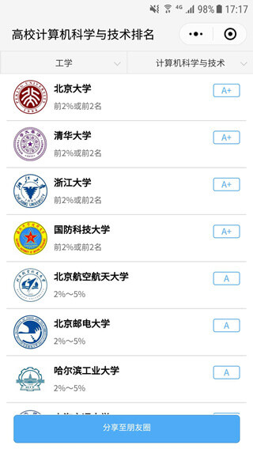
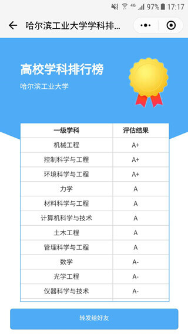
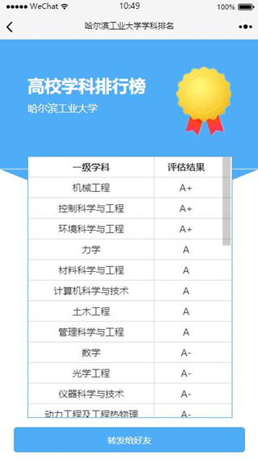

前几天，教育部公布了《全国第四轮学科评估结果》，在手机上看起来不太方便，就“撸起袖子加油干”，写了一套脚本把数据收集了一下，做成了微信小程序，叫「学科排名」。
界面
界面长这样：


界面参考了一些优秀设计元素，尽量简洁、易用。
数据库
学科评估的结果，说白了就是某个高校的某个学科怎么样。数据库设计如下：
CREATE TABLE `subject_ranking` ( |
高校代码有5位，如北京大学的是10001，其他大学的都比这个数大，所以就用了整型。
学科评估结果用数字1-9来表示，其具体含义和对应关系如下表：
| 数字 | 1 | 2 | 3 | 4 | 5 | 6 | 7 | 8 | 9 |
|---|---|---|---|---|---|---|---|---|---|
| 结果 | A+ | A | A- | B+ | B | B- | C+ | C | C- |
| 含义 | 前2%或前2名 | 2%～5% | 5%～10% | 10%～20% | 20%～30% | 30%～40% | 40%～50% | 50%～60% | 60%～70% |
具体数据是通过爬虫脚本从官网获取的，有5000+条数据。
考虑到后端用到了两个SELECT语句，一个是按学科代码，一个是按高校代码，建立两个单列索引：
ALTER TABLE `subject_ranking` ADD INDEX `idx_subjectCode`(`subjectCode`) USING BTREE; |
校徽
为了让高校排名页面视觉上更简洁大方，加上校徽元素是个不错的选择。
<image class="university-logo" src="{{item.universityLogo}}" mode="aspectFit"></image> |
由于校徽是图片形式，加载需要一定的时间。为了更好的体验，有必要上CDN，即内容分发网络。这里采用的是七牛云的对象存储。
数据库中不同高校有近500所，校徽字段universityLogo只需存储文件名称，待响应请求的时候补全外链即可。
学科选择器
高校排名页面有个二级联动学科选择器，先选学科门类，再选当前门类下的学科。考虑到学科数据不多，也不会变更，所以将这部分数据放在本地了。
其数据结构如下：
[ |
使用两个普通选择器组件就可以方便地实现二级联动。
<view class="selector"> |
高校列表
高校排名页面每次加载时，按选定学科去请求高校排名数据。不少学科对应的高校数据量很大，而我们首先看到的只是前几个，可以对高校列表进行分页。
结合实际情况，只分两步走——首先请求前10条高校记录，然后请求剩下的部分。当然，如果第一次请求获得的高校记录少于10条，也就没必要再次请求了。
分步请求的逻辑如下：
requestUniversities: function () { |
采用分步加载后，首页加载速度提升明显，加上校徽给力的CDN，次次秒开不是梦。
rpx在Plus机型的一处Bug
先看现象：

就是中间的那条白线——它并不是设计元素！
对应的CSS代码如下：
.background { |
经过测试，发现当屏幕宽度大于375px时，会出现这个Bug。显然，这个问题是由于rpx换算px的误差被放大导致的。
解决的思路也简单——当屏幕宽度大于375px时，往上挪1px就好了。
.background-plus::after { |
那怎么判断屏幕宽度大于375px？小程序提供了现成的API：
wx.getSystemInfo({ |
小程序码
小程序「学科排名」已发布，欢迎体验。
以上。